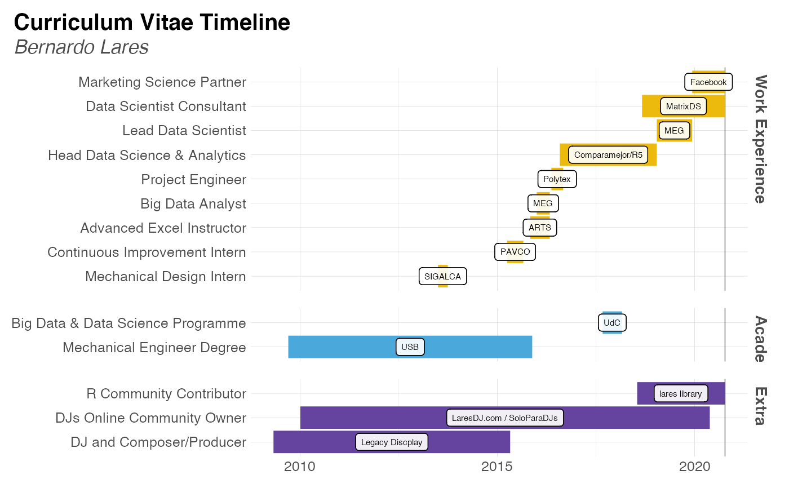

This function plots groups of observartions with timelines in a Gantt Plot way. Only works if start and end are date format values.
Usage
plot_timeline(
event,
start,
end = start + 1,
label = NA,
group = NA,
title = "Curriculum Vitae Timeline",
subtitle = "Bernardo Lares",
interactive = FALSE,
save = FALSE,
subdir = NA
)Arguments
- event
Vector. Event, role, label, or row.
- start
Vector. Start date.
- end
Vector. End date. Only one day be default if not defined
- label
Vector. Place, institution, or label.
- group
Vector. Academic, Work, Extracurricular... Pass as factor to keep a specific order
- title
Character. Title for the plot
- subtitle
Character. Subtitle for the plot
- interactive
Boolean. Run with plotly?
- save
Boolean. Save the output plot in our working directory
- subdir
Character. Into which subdirectory do you wish to save the plot to?
See also
Other Visualization:
distr(),
freqs_df(),
freqs_list(),
freqs_plot(),
freqs(),
noPlot(),
plot_chord(),
plot_survey(),
tree_var()
Examples
Sys.unsetenv("LARES_FONT") # Temporal
cols <- c("Role", "Place", "Type", "Start", "End")
today <- as.character(Sys.Date())
cv <- data.frame(rbind(
c("Marketing Science Partner", "Facebook", "Work Experience", "2019-12-09", today),
c("Data Scientist Consultant", "MatrixDS", "Work Experience", "2018-09-01", today),
c("R Community Contributor", "lares library", "Extra", "2018-07-18", today),
c("Lead Data Scientist", "MEG", "Work Experience", "2019-01-15", "2019-12-09"),
c("Head of Analytics", "Comparamejor/R5", "Work Experience", "2016-08-01", "2019-01-15"),
c("Big Data & Data Science Programme", "UdC", "Academic", "2017-09-01", "2018-02-28"),
c("Project Engineer", "Polytex", "Work Experience", "2016-05-15", "2016-09-01"),
c("Big Data Analyst", "MEG", "Work Experience", "2016-01-01", "2016-04-30"),
c("Advanced Excel Instructor", "ARTS", "Work Experience", "2015-11-01", "2016-04-30"),
c("Continuous Improvement Intern", "PAVCO", "Work Experience", "2015-04-01", "2015-08-30"),
c("Mechanical Design Intern", "SIGALCA", "Work Experience", "2013-07-01", "2013-09-30"),
c("DJs Online Community Owner", "LaresDJ.com / SoloParaDJs", "Extra", "2010-01-05", "2020-05-20"),
c("Mechanical Engineer Degree", "USB", "Academic", "2009-09-15", "2015-11-20"),
c("DJ and Composer/Producer", "Legacy Discplay", "Extra", "2009-05-01", "2015-04-30")
))
colnames(cv) <- cols
plot_timeline(
event = cv$Role,
start = cv$Start,
end = cv$End,
label = cv$Place,
# Simple trick to re-arrange the grids
group = factor(cv$Type, levels = c("Work Experience", "Academic", "Extra"))
)
